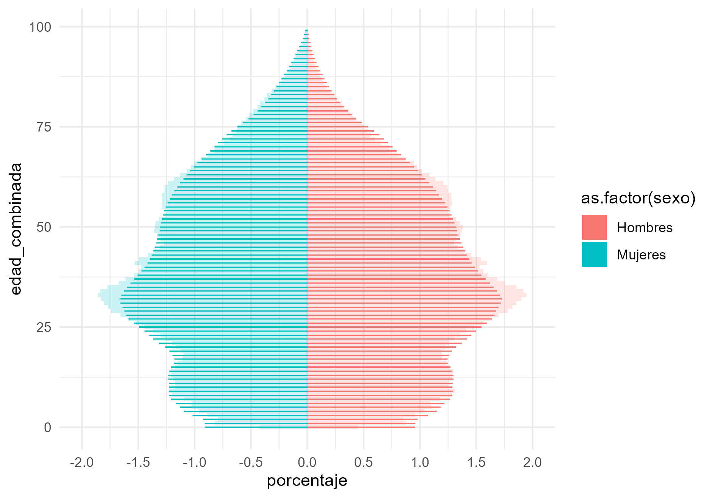
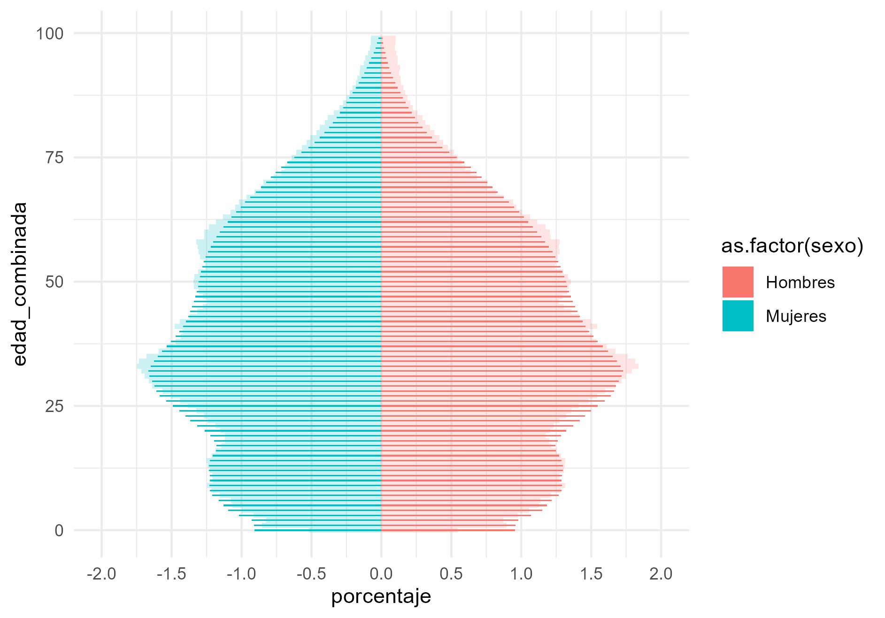

Proyecto Estratégico Registro Estadístico de Población (REP)
Agosto 2024
Introducción
Objetivo del REP:
“Compilar datos de la población permitiendo su conteo, localización y caracterización demográfica básica. Este permitirá brindar acceso a datos poblacionales desagregados, oportunos y de calidad, derivando en la disminución de costos asociados al levantamiento de datos. Además, la instalación del REP permitirá reducir las cargas en entrevistadores e informantes, entre otros beneficios.”.
Introducción
La construcción del REP se basa en el acceso a Registros Administrativos (RRAA).
Actualmente contamos con tres RRAA nominados:
Servicio de Registro Civil e Identificación (SRCeI):
Base amplia de información que incluye datos de identificación, caracterización demográfica (sexo, nacionalidad, fecha de nacimiento, fecha de defunción, estado civil, entre otros) y localización.
La información del SRCeI se considera el punto de partida crucial para el REP.
Fondo Nacional de Salud (FONASA):
El registro de FONASA es particularmente relevante para el proyecto REP dado que al contener información sobre los beneficiarios de la salud pública, abarca un universo de más de 15 millones de personas por mes.
Este registro no solo incluye personas con un RUN otorgado por el SRCeI, sino que puede contener personas a quienes aún no se les haya otorgado este identificador.
Superintendencia de Seguridad Social (SUSESO):
Recopila antecedentes de varios temas, como de los trabajadores protegidos, cotizantes, pensionados y empresas
En el marco del REP, la tabla más relevante en la exploración es A01: Trabajadores protegidos, la que contiene el detalle de los antecedentes generales de todos los trabajadores cubiertos por dicho organismo administrador.
Procesamiento
Descarga ⏳
Deduplicación ✂️
Obtener señales de vida 👋
Vinculación de las bases 🔗
Limpieza 🧹
Construcción de variables relevantes: estado y condición de residencia 🛠️
Conteos finales 👨👩👧👦
Herramientas


Herramientas: Targets 🎯
Targets es un paquete de gestión de flujos de trabajo para el lenguaje de programación R.
Targets acelera el análisis con computación paralela fácil de configurar, mejora la reproducibilidad y reduce la carga de cálculos repetidos y la micromanipulación manual de datos.
Evita tener que…
Inciar el código
Esperar mientras corre
Descubrir un problema
Reiniciar desde cero 😱
Veamos un ejemplo
Herramientas: Arrow 🏹
El paquete Arrow en R es parte del ecosistema Apache Arrow, una plataforma de desarrollo para la gestión de datos en memoria que está diseñada para ser altamente eficiente en términos de rendimiento y compatibilidad entre diferentes lenguajes de programación.
Arrow permite…
Manipulación eficiente de datos en memoria
Lectura y escritura de formatos de datos eficientes
Consulta y filtrado eficiente de datos
Pasar datos hacia y desde DuckDB
Herramientas: DuckDB 🦆
DuckDB es un motor de base de datos analítico rápido y liviano que está diseñado para funcionar con varios lenguajes de programación, incluido R.
Está diseñado para ser utilizado directamente desde el código, sin necesidad de instalar un servidor de base de datos independiente.
Permite ejecutar consultas sobre conjuntos de datos que no caben en la memoria utilizando herramientas familiares de análisis de datos.
Veamos un ejemplo:
Herramientas: DuckDB 🦆
deduplicate_rc_by_name_dob <- function(data) {
print("Cargar datos...")
data <- as_arrow_table(data)
# Crear conexión DB
con <- dbConnect(duckdb::duckdb(), dbdir = "data/edited/rep.db", read_only = FALSE)
# Registrar el objeto Arrow como una tabla virtual y crear la tabla DuckDb de esta tabla
arrow::to_duckdb(data, table_name = "rc_deduplicated_by_run", con = con)
dbSendQuery(con, "CREATE TABLE rc_deduplicated_by_run AS SELECT * FROM rc_deduplicated_by_run")
rm(data)
data <- tbl(con, "rc_deduplicated_by_run")
print("Deduplicar...")
data <- data %>%
group_by(nombre_paste_rc, fecha_nac_rc) %>%
slice_max(run_dv) %>%
ungroup() %>%
compute()
data <- data %>% to_arrow()
data <- data %>% as_arrow_table()
dbDisconnect(con)
file.remove("data/edited/rep.db")
data
}Conteos finales 👨👩👧👦
Todo muy interesante pero…
Cuántos somos?! 😱
Depende… 🤔
| estado | condicion_residencia | n | % |
|---|---|---|---|
| 1. Vivo | 1. Activo | 18.608.343 | 67,2 |
| 1. Vivo | 2. Inactivo | 322.565 | 1,2 |
| 1. Vivo | 3. Sin señal | 3.066.181 | 11,1 |
| 2. Muerto | 1. Activo | 63.946 | 0,2 |
| 2. Muerto | 2. Inactivo | 53.863 | 0,2 |
| 2. Muerto | 3. Sin señal | 5.367.658 | 19,4 |
| 3. Incierto | 2. Inactivo | 199.088 | 0,7 |
| Total | - | 27.681.644 | 100,0 |
Conteos finales 👨👩👧👦
| sexo | n | % |
|---|---|---|
| 1. Hombre | 9.150.633 | 49,2 |
| 2. Mujer | 9.456.873 | 50,8 |
| 3. Indeterminado | 758 | 0,0 |
| 4. No binario | 29 | 0,0 |
| 99. Sin información | 50 | 0,0 |
| Total | 18.608.343 | 100,0 |
| sexo | n | % |
|---|---|---|
| 1. Hombre | 10.765.414 | 49,7 |
| 2. Mujer | 10.908.220 | 50,3 |
| 3. Indeterminado | 775 | 0,0 |
| 4. No binario | 36 | 0,0 |
| 99. Sin información | 79 | 0,0 |
| Total | 21.674.524 | 100,0 |

